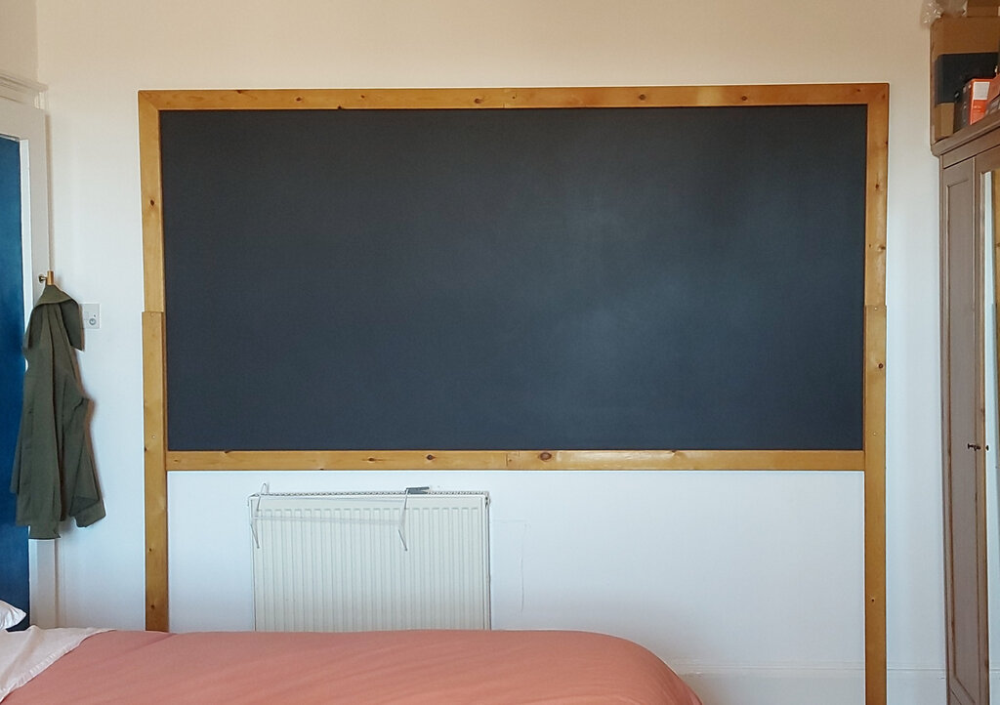

Maker Portfolio
Below are assembled images of things that I have physically made.
- Hover over each image to see a description.
- Click an image to open a full size version.
Sewing
 2024 - A shirt made from calico with 3D printed buttons.
2024 - A shirt made from calico with 3D printed buttons.
 2025 - A shirt jacket made from unknown heavy weight red fabric (found in a charity shop on Leith Walk in Edinburgh) with wooden buttons. Pattern designed from scratch.
2025 - A shirt jacket made from unknown heavy weight red fabric (found in a charity shop on Leith Walk in Edinburgh) with wooden buttons. Pattern designed from scratch.
 2025 - A corduroy shirt jacket made as a christmas gift for my brother. Wooden buttons. Pattern based on the one used for the red shirt jacket.
2025 - A corduroy shirt jacket made as a christmas gift for my brother. Wooden buttons. Pattern based on the one used for the red shirt jacket.
 2024 - Padded camera bag made almost entirely from recycled materials. Waterproof outer fabric, zippers, straps, hardware, all salvaged from a foldable dog kennel. Pattern designed from scratch.
2024 - Padded camera bag made almost entirely from recycled materials. Waterproof outer fabric, zippers, straps, hardware, all salvaged from a foldable dog kennel. Pattern designed from scratch.
Objects
 2025 - 3D printed watch casing, and cotton fabric strap, fastened with 3D printed button. 3D model for the red plastic case designed in Blender. Metal pieces used to attach strap salvaged from a broken computer case. Watch mechanism found in a charity shop in Edinburgh.
2025 - 3D printed watch casing, and cotton fabric strap, fastened with 3D printed button. 3D model for the red plastic case designed in Blender. Metal pieces used to attach strap salvaged from a broken computer case. Watch mechanism found in a charity shop in Edinburgh.
 See other photo...
See other photo...
 Left: 2024 - hand-carved spoon, made from offcut of mahogany from the Anstruther Fisheries Museum boatyard. Right: 2020 - hand-carved folding flip-spoon made from similar offcuts.
Left: 2024 - hand-carved spoon, made from offcut of mahogany from the Anstruther Fisheries Museum boatyard. Right: 2020 - hand-carved folding flip-spoon made from similar offcuts.
 See other photo...
See other photo...
 2024 - Chinese chequers game CNC milled from MDF offcut. Pieces made from metal dowels, painted with enamel paint. Made as a gift for my mum.
2024 - Chinese chequers game CNC milled from MDF offcut. Pieces made from metal dowels, painted with enamel paint. Made as a gift for my mum.
DIY

2024 - Blackboard made from an MDF board, painted with blackboard paint, and framed with a recycled wooden bed frame. Used during my mathematics undergraduate. 2026 - Drum-sander floor sanding, initial progress with 40 grid sandpaper.
2026 - Drum-sander floor sanding, initial progress with 40 grid sandpaper.
 2026 - Drum-sander and edge-sander used to sand entire room. Result after passes with 40, 80, and 120 grid paper.
2026 - Drum-sander and edge-sander used to sand entire room. Result after passes with 40, 80, and 120 grid paper.
 Thank you for looking at my maker portfolio! I appreciate people taking interest in the things I make!
Thank you for looking at my maker portfolio! I appreciate people taking interest in the things I make!
 2026 - Table made from recycled pallets. After our picnic table rotted, and with a gardening event fast-approaching, a new table was needed quickly.
2026 - Table made from recycled pallets. After our picnic table rotted, and with a gardening event fast-approaching, a new table was needed quickly.